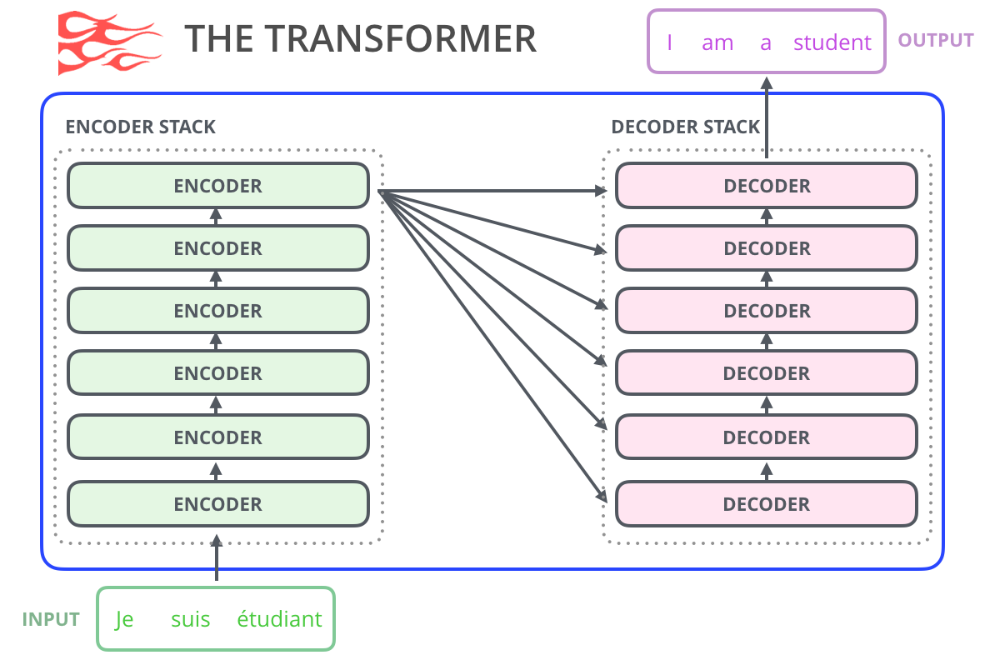
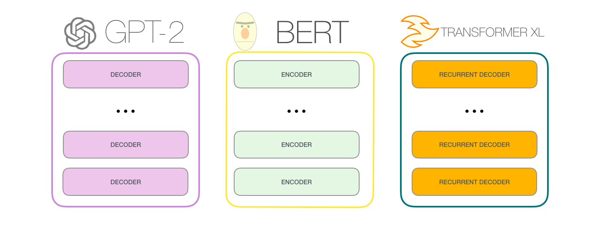
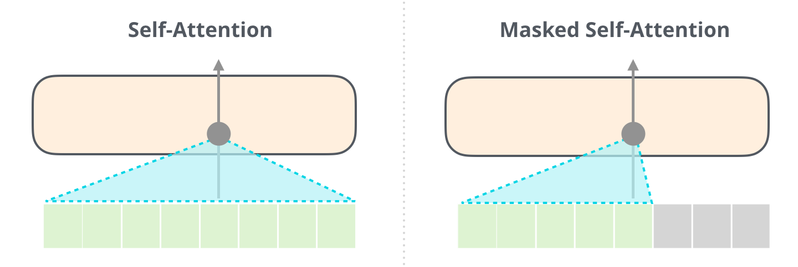
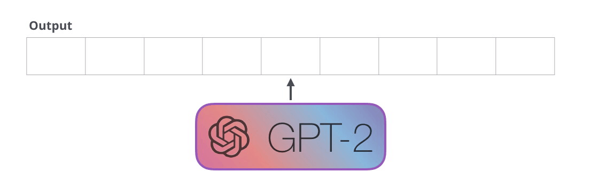
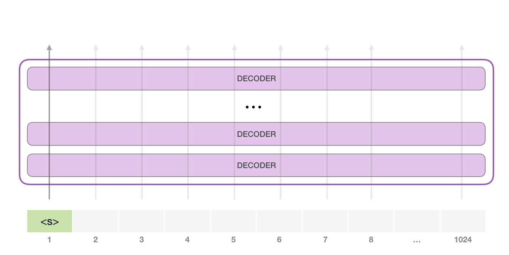
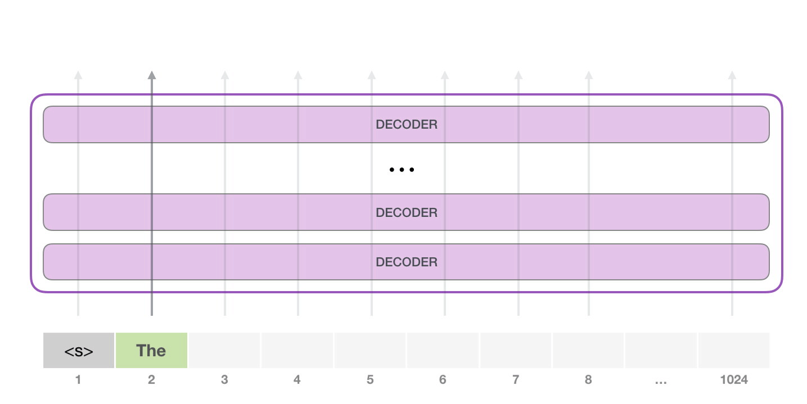

上午 · 1.1
AI发展与大模型时代
从规则引擎到涌现能力，理解AI为什么在今天真正可用 · 20分钟
从规则到涌现：AI的三次范式跃迁
1950s-1980s
符号主义：规则引擎
人类编写IF-THEN规则，机器执行。专家系统如MYCIN可诊断血液感染，但规则爆炸导致无法扩展。
2010s
统计学习：深度学习
从数据中自动学习特征。CNN识别图像、RNN处理序列，但每个任务需独立训练模型，泛化能力弱。
2020s
大语言模型：涌现能力
GPT系列模型在千亿参数规模下涌现出推理、翻译、编程等未被显式训练的能力——"量变引起质变"。
⚡ 核心概念：涌现能力（Emergent Abilities）
当模型参数量从10亿增长到1000亿时，某些能力不是渐进提升的，而是在某个阈值突然"涌现"出来。这就像水温从99°C到100°C——不是"更热的水"，而是"质的改变"。
涌现的关键能力包括：
1. 链式推理（Chain-of-Thought）：能分步骤解决复杂问题
2. 指令遵循（Instruction Following）：理解并执行自然语言指令
3. 上下文学习（In-Context Learning）：无需微调，从示例中学习新任务
这三个能力是Agent技术得以实现的前提条件——没有推理能力就无法规划，没有指令遵循就无法控制，没有上下文学习就无法适配新场景。
涌现的关键能力包括：
1. 链式推理（Chain-of-Thought）：能分步骤解决复杂问题
2. 指令遵循（Instruction Following）：理解并执行自然语言指令
3. 上下文学习（In-Context Learning）：无需微调，从示例中学习新任务
这三个能力是Agent技术得以实现的前提条件——没有推理能力就无法规划，没有指令遵循就无法控制，没有上下文学习就无法适配新场景。
大模型的能力边界：能做什么，不能做什么
| 能力维度 | LLM 擅长 ✅ | LLM 不擅长 ❌ |
|---|---|---|
| 语言理解 | 意图识别、情感分析、文本摘要 | 精确数学计算、逻辑证明 |
| 知识问答 | 通识领域、常见专业领域 | 实时信息、超长尾知识 |
| 内容生成 | 文案、代码草稿、报告框架 | 需要精确数据的报表 |
| 推理规划 | 多步骤任务拆解、方案设计 | 需要外部验证的推理链 |
| 工具调用 | 选择合适工具、构造参数 | 执行实际操作、访问实时数据 |
⚠ 关键风险：幻觉（Hallucination）
LLM会自信地生成看似合理但实际错误的内容。这是因为它不是在"检索事实"，而是在"预测下一个Token"。当训练数据中缺少相关信息时，模型会"编造"听起来合理的答案。
应对策略：
1. RAG：先检索真实文档，再基于文档生成回答
2. 工具调用：让Agent查数据库、调API，而非凭记忆回答
3. 人机协同（HITL）：高风险决策必须经人工确认
4. System Prompt约束：明确告知"不知道就说不知道"
应对策略：
1. RAG：先检索真实文档，再基于文档生成回答
2. 工具调用：让Agent查数据库、调API，而非凭记忆回答
3. 人机协同（HITL）：高风险决策必须经人工确认
4. System Prompt约束：明确告知"不知道就说不知道"
电信行业AI应用图谱
智能客服
7×24政务/业务咨询，RAG+知识库实现精准回答
商机挖掘
多模态感知+多Agent协同，自动发现和跟进商机
合同审核
风险条款自动识别，HITL人机协同审批
BI分析
自然语言查询数据，代码解释器统计分析
质量检测
CV视觉质检，三种多模态模式按需选择
运营监控
事件驱动Agent，自动巡检+告警+闭环
上午 · 1.2
LLM核心原理
理解大语言模型的运作机制，建立正确的技术直觉 · 30分钟
Transformer架构：一切的基础
⚡ Transformer的核心创新：自注意力机制
2017年Google论文《Attention Is All You Need》提出Transformer，核心思想：
每个词都"看"到句子中的所有其他词，通过计算注意力权重决定"谁对我最重要"。
示例：句子「银行利率调整影响银行股价」
- 第一个「银行」→ 关注「利率」(权重0.7) + 「调整」(权重0.2)
- 第二个「银行」→ 关注「股价」(权重0.6) + 「调整」(权重0.3)
同样的"银行"，因为上下文不同，关注点完全不同——这就是自注意力的威力。
Transformer vs RNN：
- RNN：从左到右逐词处理，长距离信息衰减 → 无法并行
- Transformer：所有位置同时计算注意力 → 可并行 + 长距离建模
每个词都"看"到句子中的所有其他词，通过计算注意力权重决定"谁对我最重要"。
示例：句子「银行利率调整影响银行股价」
- 第一个「银行」→ 关注「利率」(权重0.7) + 「调整」(权重0.2)
- 第二个「银行」→ 关注「股价」(权重0.6) + 「调整」(权重0.3)
同样的"银行"，因为上下文不同，关注点完全不同——这就是自注意力的威力。
Transformer vs RNN：
- RNN：从左到右逐词处理，长距离信息衰减 → 无法并行
- Transformer：所有位置同时计算注意力 → 可并行 + 长距离建模
Transformer 编码器结构（简化）：
输入文本 → Token嵌入 + 位置编码
│
▼
┌─── 多头自注意力 ───┐
│ Q·K^T / √d → Softmax │ ← 计算每个Token对其他Token的关注度
│ 结果 × V │ ← 加权汇总信息
└────────┬──────────┘
│ + 残差连接 & 层归一化
▼
┌─── 前馈神经网络 ───┐
│ Linear → ReLU → Linear │ ← 逐位置非线性变换
└────────┬──────────┘
│ + 残差连接 & 层归一化
▼
编码输出
GPT系列 = Transformer解码器堆叠（仅保留自注意力+前馈层）
BERT系列 = Transformer编码器堆叠

原始Transformer架构：左侧编码器栈 + 右侧解码器栈，用于机器翻译等序列到序列任务。来源：Jay Alammar

三大家族对比：GPT-2 仅用解码器栈（自回归）、BERT 仅用编码器栈（双向）、Transformer-XL 解码器+片段递归。来源：Jay Alammar

自注意力 vs 掩码自注意力：左图普通自注意力（BERT）可以看到所有位置；右图掩码自注意力（GPT）只能看到当前及之前的Token，防止"偷看"未来。这是 GPT 自回归生成的关键机制。来源：Jay Alammar
注意力机制与自回归生成
💡 核心原理：LLM是"逐Token预测"的
GPT系列模型的工作方式是自回归（Autoregressive）：
输入：「公积金提取需要」
Step 1: 预测下一个Token → 「哪些」
Step 2: 输入变为「公积金提取需要哪些」→ 预测 → 「材料」
Step 3: 输入变为「公积金提取需要哪些材料」→ 预测 → 「？」
...
每次只预测一个Token，然后把预测结果拼到输入中，再预测下一个。这就是为什么：
1. 生成越长越慢（每步都要重新计算注意力）
2. 早期的错误会"滚雪球"式传播（幻觉的根源之一）
3.
输入：「公积金提取需要」
Step 1: 预测下一个Token → 「哪些」
Step 2: 输入变为「公积金提取需要哪些」→ 预测 → 「材料」
Step 3: 输入变为「公积金提取需要哪些材料」→ 预测 → 「？」
...
每次只预测一个Token，然后把预测结果拼到输入中，再预测下一个。这就是为什么：
1. 生成越长越慢（每步都要重新计算注意力）
2. 早期的错误会"滚雪球"式传播（幻觉的根源之一）
3.
max_tokens参数控制最多生成多少Token

GPT-2 逐Token输出：模型每次只生成一个Token，生成后立刻拼入输入序列，作为下一步的输入。这就是"自回归"的核心过程。来源：Jay Alammar

Step 1：输入起始Token <s>，经过所有解码器层后，对词表打分，选出概率最高的Token（如"the"）。

Step 2：将上一步的输出拼入输入，新的Token路径被激活，各层复用已有Key/Value，预测下一个Token。

自回归循环：每一步的输出Token都会"反馈"到输入端，形成"输入→预测→拼入→再预测"的循环，直到生成结束符或达到
max_tokens 上限。这也解释了为什么生成速度与输出长度成正比。来源：Jay AlammarToken化与上下文窗口
🔧 Token：LLM的最小处理单位
文本不是按"字"或"词"输入模型的，而是按Token。Token是分词器（Tokenizer）划分的最小单元：
英文："Hello world" → [
中文："你好世界" → [
数字："3.14159" → [
关键规则：
1. 1个汉字 ≈ 1-2个Token，1个英文单词 ≈ 1-2个Token
2. 1个Token ≈ 0.75个英文单词 ≈ 0.5个中文字（粗略估算）
3. 上下文窗口 = 模型一次能处理的最大Token数（如4K/8K/128K）
4. Token数直接影响成本和延迟
英文："Hello world" → [
Hello, world] = 2 tokens中文："你好世界" → [
你好, 世界] ≈ 2-4 tokens数字："3.14159" → [
3, ., 14159] = 3 tokens关键规则：
1. 1个汉字 ≈ 1-2个Token，1个英文单词 ≈ 1-2个Token
2. 1个Token ≈ 0.75个英文单词 ≈ 0.5个中文字（粗略估算）
3. 上下文窗口 = 模型一次能处理的最大Token数（如4K/8K/128K）
4. Token数直接影响成本和延迟
| 模型 | 上下文窗口 | 约等于中文字数 | 典型用途 |
|---|---|---|---|
| GPT-3.5 | 4K tokens | ~2,000字 | 简单对话 |
| GPT-4 | 8K-128K tokens | ~4,000-64,000字 | 长文档处理 |
| Claude 3 | 200K tokens | ~100,000字 | 超长文档分析 |
| 国产大模型 | 8K-128K tokens | ~4,000-64,000字 | 政务/企业场景 |
| 1张图片（512×512） | ~258 tokens | ≈ 130字 | 图像理解 |
| 1张图片（1920×1080） | ~2,042 tokens | ≈ 1,000字 | 高清图片分析 |
📸 图像↔Token：视觉信息的数字化代价
多模态模型将图像也转换为Token，但一幅图的Token消耗远超想象：
图像Token化过程：
1. 将图片切成 14×14像素的小块（Patch）
2. 每个Patch经过PatchEmbed变为一个向量 → 2×2 PatchMerger合并 → 每~32×32像素 ≈ 1个Token
3. 再加2个特殊Token（起止标记）
Token计算公式：
实际示例：
• 512×512 图片 → (16×16)+2 = 258 tokens ≈ 130个中文字
• 1920×1080 图片 → (~44×~46)+2 ≈ 2,042 tokens ≈ 1,000个中文字
• 4K图片(3840×2160) → ~8,194 tokens ≈ 4,000个中文字
实战启示：发送10张截图给大模型 ≈ 消耗1-2万Token，等于喂了一整篇论文！图片越大、分辨率越高，Token消耗指数级增长。
图像Token化过程：
1. 将图片切成 14×14像素的小块（Patch）
2. 每个Patch经过PatchEmbed变为一个向量 → 2×2 PatchMerger合并 → 每~32×32像素 ≈ 1个Token
3. 再加2个特殊Token（起止标记）
Token计算公式：
num_tokens = (H'/32) × (W'/32) + 2（H'/W'为缩放后的分辨率）实际示例：
• 512×512 图片 → (16×16)+2 = 258 tokens ≈ 130个中文字
• 1920×1080 图片 → (~44×~46)+2 ≈ 2,042 tokens ≈ 1,000个中文字
• 4K图片(3840×2160) → ~8,194 tokens ≈ 4,000个中文字
实战启示：发送10张截图给大模型 ≈ 消耗1-2万Token，等于喂了一整篇论文！图片越大、分辨率越高，Token消耗指数级增长。
⚠ 上下文窗口 ≠ 有效注意力
虽然模型技术上支持128K上下文，但并非所有128K Token都能被同等关注。研究表明：
1. 模型对开头和结尾的内容注意力最强（"首因效应"+"近因效应"）
2. 中间部分的内容容易被"遗忘"（Lost in the Middle现象）
3. 这就是为什么System Prompt放在开头（首因效应）、最新对话放在末尾（近因效应）
4. 上下文压缩策略（Day 3学习）的核心目的就是解决窗口受限问题
1. 模型对开头和结尾的内容注意力最强（"首因效应"+"近因效应"）
2. 中间部分的内容容易被"遗忘"（Lost in the Middle现象）
3. 这就是为什么System Prompt放在开头（首因效应）、最新对话放在末尾（近因效应）
4. 上下文压缩策略（Day 3学习）的核心目的就是解决窗口受限问题
温度与采样策略
🔧 Temperature：控制输出的"创造性"
temperature参数控制模型从概率分布中采样的"随机性"：temperature = 0（贪心解码）：每次选概率最高的Token → 输出确定性强、无创意
temperature = 0.3（低温度）：大部分时候选高概率Token，偶尔有变化 → 适合事实性问答
temperature = 0.7（中温度）：较平衡 → 适合一般对话
temperature = 1.0（高温度）：更多探索低概率Token → 适合创意写作
实战建议：
- 政务问答/合同审核：
temperature=0.1~0.3（准确性优先）- 文案生成/营销策略：
temperature=0.6~0.8（创意性优先）- 代码生成：
temperature=0.2（确定性优先）
🔧 Top-K 与 Top-P：精细控制采样空间
Temperature控制概率分布的"陡峭程度"，而Top-K和Top-P控制从哪些Token中采样——两者配合使用效果更精细：
Top-K Sampling：
只从概率最高的K个Token中采样，其余直接截断。
•
•
• K越大→多样性越强，K越小→确定性越强
Top-P（Nucleus Sampling）：
从概率最高的Token开始累加，直到累计概率 ≥ P，只在这个最小集合中采样。
•
•
• 优势：自适应——常见词自动少选（概率集中），罕见词自动多选（概率分散）
三者协同规则：先Top-K截断 → 再Top-P截断 → 最后Temperature缩放 → 采样
API中通常同时设置，更严格的那个生效。实战建议：
- 确定性场景：
- 平衡场景：
- 创意场景：
Top-K Sampling：
只从概率最高的K个Token中采样，其余直接截断。
•
top_k=1：等价于贪心解码（只选最高的1个）•
top_k=50：从概率Top 50中按权重随机选（常用默认值）• K越大→多样性越强，K越小→确定性越强
Top-P（Nucleus Sampling）：
从概率最高的Token开始累加，直到累计概率 ≥ P，只在这个最小集合中采样。
•
top_p=0.1：极窄，几乎只选最高概率Token•
top_p=0.9：常用默认值，累计覆盖90%概率质量• 优势：自适应——常见词自动少选（概率集中），罕见词自动多选（概率分散）
三者协同规则：先Top-K截断 → 再Top-P截断 → 最后Temperature缩放 → 采样
API中通常同时设置，更严格的那个生效。实战建议：
- 确定性场景：
temperature=0（此时Top-K/P不生效）- 平衡场景：
temperature=0.7, top_p=0.9（Top-P为主，Temperature微调）- 创意场景：
temperature=1.0, top_k=0, top_p=0.95（放开Top-K限制）
⚙ vLLM 部署核心参数
vLLM是当前最流行的开源推理引擎，基于PagedAttention技术实现高效KV Cache管理。以下是
一、模型与加载
•
•
•
•
二、KV Cache 与显存
•
•
•
三、调度与并发
•
•
•
四、服务与输出
•
•
•
•
vllm serve启动时最关键的参数：一、模型与加载
•
--model：模型路径或HuggingFace ID（如Qwen/Qwen2.5-72B-Instruct）•
--tensor-parallel-size（-tp）：张量并行度，模型分层放到多张GPU上。72B模型需tp=2（2×A100），7B/14B单卡即可tp=1•
--pipeline-parallel-size（-pp）：流水线并行度，按层切分到不同GPU。通常tp优先，pp在跨节点时使用•
--quantization：量化方式。awq（4bit，A100/WIDER适用）/ gptq（4bit）/ fp8（H100原生支持）。量化后显存降50-75%，吞吐提升但精度略损二、KV Cache 与显存
•
--gpu-memory-utilization：GPU显存利用率，默认0.9（90%给KV Cache，10%给模型权重和安全余量）。调高→更多并发，调低→更稳不易OOM•
--max-model-len：模型支持的最大序列长度。设小→KV Cache占用少→并发更高。如模型支持128K但你只需要4K，设4096可大幅提升并发•
--block-size：PagedAttention的内存块大小（默认16 Token），一般不需调整三、调度与并发
•
--max-num-seqs：单批次最大并发序列数，默认256。受显存约束，实际并发=可用KV Cache ÷ 平均序列长度•
--max-num-batched-tokens：单批最大Token总数（prefill阶段），默认自动推算。越大吞吐越高，但prefill延迟也增•
--enable-chunked-prefill：分块预填充，将长prompt的prefill拆成小块与decode交替执行，避免长请求阻塞短请求四、服务与输出
•
--host / --port：监听地址，默认0.0.0.0:8000，兼容OpenAI API格式•
--served-model-name：对外暴露的模型名（API中model字段），可与实际模型名不同，方便迁移切换•
--enable-prefix-caching：前缀缓存（APC），相同System Prompt的请求复用KV Cache，多轮对话/批量场景提速显著•
--disable-log-requests：关闭请求日志（生产环境建议关闭，减少IO开销）
| 部署场景 | 模型 | tp | quantization | gpu-mem-util | max-model-len | 关键优化 |
|---|---|---|---|---|---|---|
| 单卡A100问答服务 | Qwen2.5-72B | 1 | awq | 0.9 | 8192 | 量化+截短窗口 |
| 双卡A100全精度 | Qwen2.5-72B | 2 | 无 | 0.9 | 32768 | tp=2张量并行 |
| 单卡4090小模型 | Qwen2.5-14B | 1 | 无 | 0.85 | 4096 | 截短窗口提升并发 |
| H100 fp8高速 | Qwen2.5-72B | 1 | fp8 | 0.9 | 16384 | fp8原生加速 |
| 批量多轮对话 | Qwen2.5-32B | 1 | awq | 0.9 | 8192 | prefix-caching+chunked-prefill |
⚠ vLLM 部署常见陷阱
1. max-model-len 设太大：128K窗口下KV Cache占用极大，并发暴跌。如果业务只需4K，设4096可将并发提升10倍以上。
2. gpu-memory-utilization 拉满到0.99：看似用满显存，但模型加载、临时Tensor、框架开销都需要余量，0.95以上容易OOM崩溃。建议0.85-0.9。
3. 张量并行≠线性加速：tp=2不是单卡2倍吞吐，实际约1.5-1.8倍（通信开销）。跨节点tp更慢，此时应考虑pp流水线并行。
4. 量化后不校验精度：AWQ/GPTQ在数学推理、长文本场景精度损失明显。部署后必须用业务数据集做回归评测，不能只看benchmark。
2. gpu-memory-utilization 拉满到0.99：看似用满显存，但模型加载、临时Tensor、框架开销都需要余量，0.95以上容易OOM崩溃。建议0.85-0.9。
3. 张量并行≠线性加速：tp=2不是单卡2倍吞吐，实际约1.5-1.8倍（通信开销）。跨节点tp更慢，此时应考虑pp流水线并行。
4. 量化后不校验精度：AWQ/GPTQ在数学推理、长文本场景精度损失明显。部署后必须用业务数据集做回归评测，不能只看benchmark。